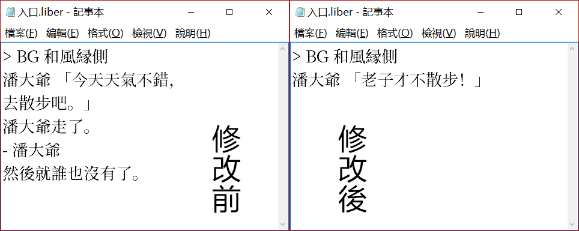
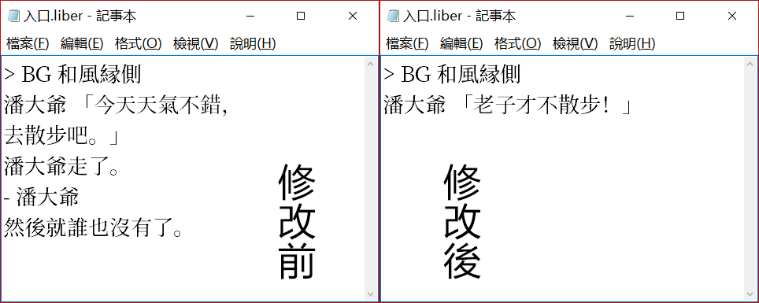

小試牛刀
如果你成功地安裝了Librian，並新建了一個工程，接下來我們就可以試着改改劇本了。

回到剛纔打開的工程文件夾，進入「我的劇本」，修改「入口.liber」——它只是一個普通的字文件所以用記事本打開就行，如果你有 sublime | atom 之類更稱手的道具的話就更好了。

修改「入口.liber」之後保存。
然後重新啓動這個工程，就可以看到 潘大爺 說的話變了。
如果你成功地安裝了Librian，並新建了一個工程，接下來我們就可以試着改改劇本了。
回到剛纔打開的工程文件夾，進入「我的劇本」，修改「入口.liber」——它只是一個普通的字文件所以用記事本打開就行，如果你有 sublime | atom 之類更稱手的道具的話就更好了。

修改「入口.liber」之後保存。
然後重新啓動這個工程，就可以看到 潘大爺 說的話變了。